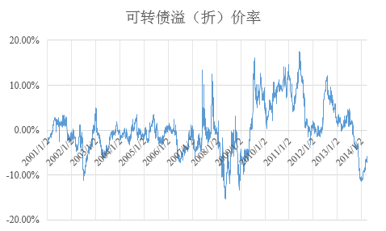

主要運用定性與定量的基本面分析，通過同時做多與做空投資股票及其衍生品。
運用這一策略的典型代表是老虎基金，通過做多價值股同時做空垃圾股（沒有現金流的公司）獲得超額收益，在二十一世紀之前他們的策略非常成功，但在互聯網泡中損失慘重。
指持有不同股票、債券、貨幣及期貨市場的賣空和買空頭寸。這些投資主要根據對不同國家的總體經濟及政治看法而做出。「宏觀」一詞，來源於基金經理試圖利用宏觀經濟的基本原理來識別金融資產價格的失衡錯配現象，而「全球」則是指可以在全世界的範圍內尋找發現這種價格錯配的現象。
索羅斯領銜的量子基金即主要運用了這一策略，狙擊英鎊、泰銖的案例正是發現了價格錯配的現象。
事件驅動策略是在提前挖掘和深入分析可能造成股價異常波動的事件基礎上，通過充分把握交易時機獲取超額投資回報的交易策略。在一個有效的市場裏面，假定投資者都遵循正常的投資邏輯，大家比的是一個「快」字，所以在美國語音識別、文本挖掘都是可以賺錢的策略。在並非有效的市場中，事件驅動並不是基於「投資者都會立刻做出理性決定」這個假設，更多的時候是假設「投資者向理性迴歸」，即從反應不足或過度反應向充分反應的迴歸。
相對價值策略利用相關聯證券之間的定價誤差來獲利。也就是當我們判斷一種證券的價值被高估，一種證券的價值被低估的時候，通過買入低估的證券，賣空高估的證券直至二者的價格趨於收斂而平倉，從而獲取微小的價差收益。
一個典型的例子是可轉換債券策略，該策略利用了可轉換債券價值低估的市場狀態，通過買入可轉換債券，賣空相應的債券以及期權進行套利。
可轉債，全稱為可轉換公司債券，是一類特殊的債券。它可以轉換為債券發行公司的股票，因而又可視作為股債混合體，兼具股債特性。
具體而言，可轉債擁有一般債券的特點，即還本付息，又具有股票的特點，即能夠在轉股期按約定比例轉換為股票。因而這類債券的票面利率通常很低，但卻能在股票上升時享受收益，在股票表現不佳時抵抗風險。
對於可轉債的定價可以從以下角度思考，即將其股債特性拆分，也就是說： 一份可轉債= 一份公司發行的普通債券+ 一定數量的美式看漲期權 需要注意的是，這裡普通債券的票面利率、期限與可轉債相等，美式看漲期權的數量、執行價格和期限由轉股比例、轉股價格和債券期限決定。
普通債券的定價可以參照一般的DCF模型，債券利率盡可能選擇相同公司發行的相近期限的債券利率，也可選擇相同評級、相近期限的債券利率。 需要注意的是由於可轉債的票面利率通常較低，因而可轉債中純債部分的價值一般低於面值。
由於可轉債的轉股價格會隨公司分紅進行相應的除權除息，因而可以把期權對應的證券看作無股息的品種進行定價，這樣的話，美式看漲期權的價格就等於歐式看漲期權的價格了。這樣我們便可以套用Black-Scholes公式簡便地進行定價了。
中國的可轉債市場起源於二十世紀末期，當時可轉債扮演了公司上市前奏的作用（如南化轉債、絲綢轉債等），如果公司上市成功則可轉債價值大增。進入二十一世紀可轉債逐漸成為了上市公司融資工具。
由於審批條件相對複雜苛刻，可轉債市場的規模相對有限，直至2011年後證監會鼓勵債市融資、多樣融資的政策導向使得可轉債迅速擴容。
下圖顯示了中國可轉債市場十幾年來的總體估值水準：

值得注意的是，早年的可轉債市場規模小，流動性差，但估值較為理性，除了2003年的熊市導致的悲觀情緒外，基本沒有較大幅度的折溢價情況出現。
隨著2007年大牛市的上演，可轉債價值得以充分體現並出現兩次較大幅度的溢價。隨後到了2008年，首先在5月隨著滬指跌破3,000點悲觀情緒的蔓延導致了第一次大幅折價，隨後在11月初由於“08江銅債”事件導致整個企業債市場，特別是可分離、可轉債市場的純債違約恐慌，市場再次出現大幅折價現象。
在2009年的“四萬億”行情中，可轉債的股性再次啟動，隨著可轉債基金的火爆，市場陷入了供不應求的狀態，溢價狀態持續了近2年。
2011年後，隨著可轉債市場擴容市場趨於理性。進入2013下半年，熊市情緒再次蔓延，可轉債再次回到了折價狀態。
如果可轉債的市場價格低於其轉股價值，那麼可以通過轉股套利獲得無風險收益，具體步驟如下： 購入可轉債—>提交轉股申請—>融券做空相應數量標的證券鎖定收益實現對沖—>T+1日轉股完成後將股票歸還
如果可轉債市場價格低於（或高於）理論價值，則可以進行統計套利，以低於理論價值為例，具體步驟如下： 購入可轉債–>做空相應數量的純債即可獲得低於理論價值的看漲期權 購入可轉債—>做空相應數量的看漲期權即可獲第低於理論價值的純債
當然，上述方法在實施過程中需要注意幾點： 由於中國證券市場完全性低上述方法不一定具有可行性。 深度虛值的可轉債如小幅溢價為合理情形，反映了管理層調低轉股價格的預期（如南山轉債、雙良轉債等） 已觸發或即將出發提前贖回條款的可轉債，管理層很有可能提前贖回債券造成期權時間價值的損失。